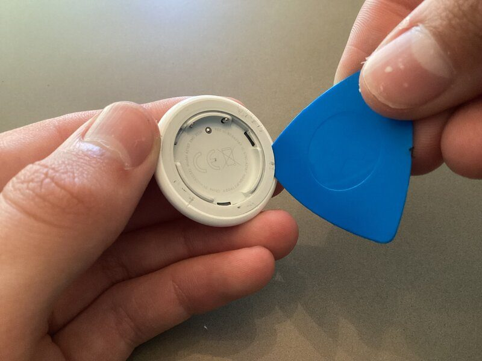
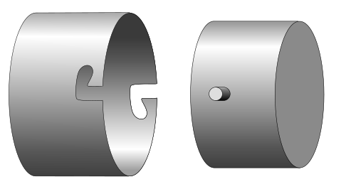

配图

iFixit：旋下金属后盖露出电池仓

iFixit：撬开前后塑料壳之间的卡扣

Wikimedia Commons：卡口连接示意（Bayonet mount）
图片版权归原作者所有，仅作个人学习收藏；出处见文末「来源与核实记录」。
结构原理
本节数字只写来源里给出的；来源没有就写「来源未给出」。
堆叠方案
方向：从背面到正面
| 层级 | 零件 | 材料 | 厚度/尺寸 | 固定方式 | 依据 |
|---|---|---|---|---|---|
| L1 | 金属后盖 | 金属 | 来源未给出 | 旋转卡口（扭转取下） | Step 1-2 |
| L2 | CR2032 纽扣电池 | — | CR2032（标准规格） | 放在电池仓内 | Step 1 |
| L3 | 后塑料壳 | 塑料 | 来源未给出 | 卡扣与前壳连接 | Step 3 |
| L4 | PCB + 天线线圈 | — | 来源未给出 | 嵌在塑料壳内，4 处连接点 | Step 4 |
| L5 | 前塑料壳 | 塑料 | 来源未给出 | — | Step 3-4 |
剖面示意：
flowchart TB N0["金属后盖(旋转卡口)"] N1["CR2032 电池"] N2["后塑料壳"] N3["PCB+天线线圈"] N4["前塑料壳"] N0 --> N1 --> N2 --> N3 --> N4
零件清单
| 零件 | 数量 | 功能 | 材料 | 依据 |
|---|---|---|---|---|
| 金属后盖 | 1 | 电池仓盖，旋转锁定 | 金属 | Step 1 |
| CR2032 | 1 | 供电 | — | Step 1 |
| 塑料壳 | 2（前/后） | 卡扣连接 | 塑料 | Step 3 |
| PCB | 1 | U1、nRF52832 等 | — | Step 5 |
装配顺序
- (按拆解顺序反推) PCB 嵌入前壳
- 后壳与前壳卡扣扣合
- 放入 CR2032
- 金属后盖对准后旋转锁定
来源只给出拆解顺序，以上为反推。
受力与运动分析
- 受力路径：卡口原理（Wikipedia）：凸销沿 L 形槽进入并旋转，靠弹簧把销推入槽末端的小缺口锁定，抗振动、不会错牙。AirTag 内部弹力元件来源未给出。
- 运动关系：后盖绕轴旋转锁定/解锁（用户动作）；内部卡扣为一次装配。
- 失效风险：作者撬 PCB 时必须折断/拆焊 4 个连接点，拆解变为破坏性（Step 4）。
设计要点与参数
| 要点 | 内容 | 依据 |
|---|---|---|
| 电池 | CR2032 | Step 1 |
| 后盖旋转角度/卡口数量 | 来源未给出 | — |
优缺点
优点
- 用户维护（换电池）免工具
- 卡口比螺纹更快、不会错牙（Wikipedia）
缺点 / 代价
- 内部 PCB 拆解为破坏性
可借鉴点
- 「用户维护件」用卡口免工具开启，「非维护件」用卡扣/嵌装，分级设计
- 卡口要有弹性元件提供锁定预压
相关案例
来源与核实记录
- 主来源：Apple Air Tag Teardown（2026-05-22（API 发布时间），Mr.CircuitBoard（iFixit 社区））
- 补充来源：https://en.wikipedia.org/wiki/Bayonet_mount
- 图片来自 Wikimedia Commons（随 Wikipedia 词条展示），遵循原图许可。
- 核实：2026-11-13 通过 iFixit API 读取 6 步原文；打开 Wikipedia「Bayonet mount」核对卡口原理。